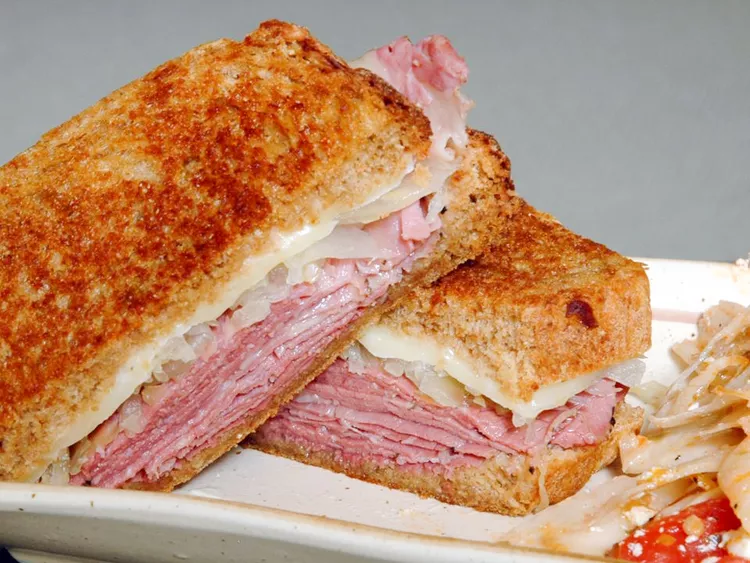

Main page
Pastrami Reuben Sandwich

Description
I make this Reuben sandwich with pastrami for my husband and serve it alongside coleslaw or potato salad.
Ingredients
- 3/4 cup Thousand Island dressing
- 8 slices rye bread
- 1 (16 ounce) can sauerkraut, drained
- 8 slices Swiss cheese
- 1/4 margarine, softened
Steps
- Spread dressing onto one side of each bread slice. Top 1/2 of the slices with sauerkraut, Swiss cheese, and pastrami, then top with remaining bread, dressing-side down. Spread margarine on the outside of each sandwich.
- Heat a large skillet over medium-high heat. Grill sandwiches in the hot skillet until bread is golden brown, fillings are hot, and cheese is melted, 3 to 5 minutes per side.